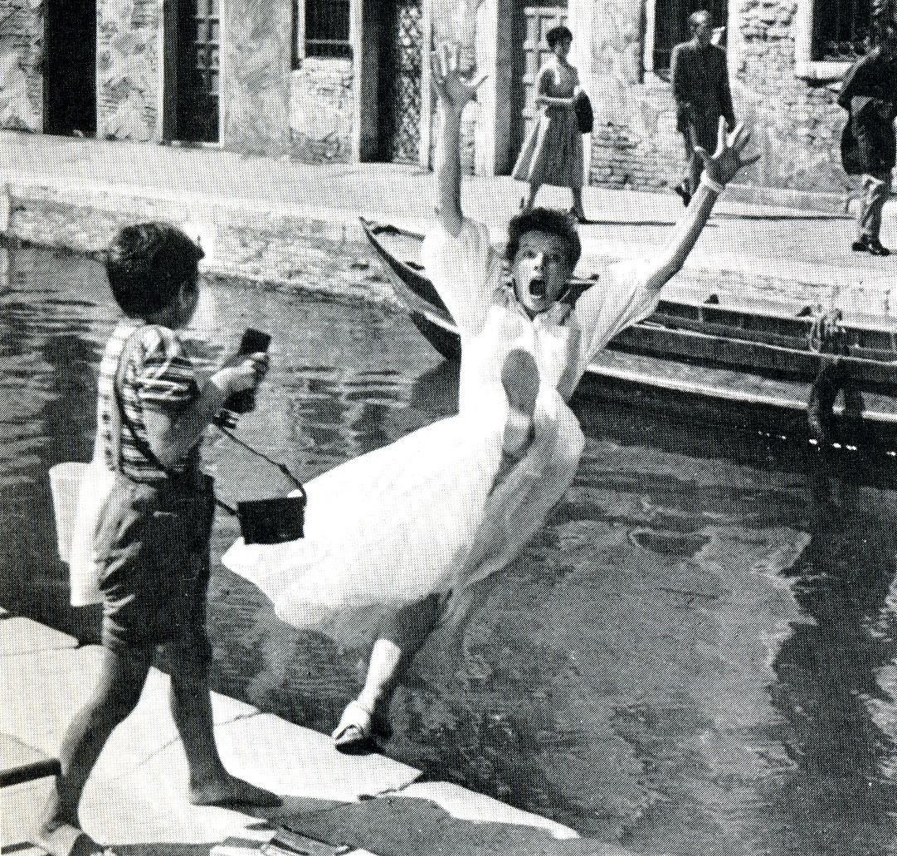
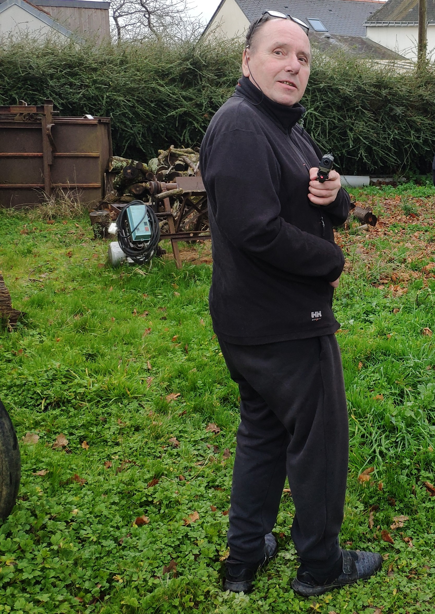

Accueil

Aujourd'hui beaucoup de personnes sont hospitalisés parce qu'elles chutent. Selon le ministère de la santé, il y a plus de 2 millions de chutent de personnes de plus de 65 ans par an et c'est la cause de 10 000 décès. La France a montré son intérêt envers cet enjeu en proposant le plan national de chute. Au-delà conséquences humaines,coût pour la collectivité : 2 milliards d’euros.
L'hospitalisation à domicile ?
Cependant les entreprises qui traitent cette problématique se concentrent principalement sur des solutions de téléassistance ou pour les établissements de santé. En France, plus de 260 000 patients sont envoyés en hospitalisation à domicile chaque année. Ces chiffres tendent à augmenter en alternative à l’hospitalisation classique, que ce soit par manque de lit ou de personnel soignant.
A travers ces exemples, nous avons pu voir deux choses: quand on est chez soi on veut de la liberté et de l'autonomie, et à l'inverse à l'hôpital on recherche la sécurité. C’est ici, à la jonction des deux qu’intervient le projet Amplit’ude qui va allier les deux mondes afin de créer la nouvelle hospitalisation active à domicile.
Résumé du projet Amplitude

Pour remonter aux origines de cet projet, je vais vous raconter une histoire personnelle. Voici Laurent, c’est mon papa. Suite à un AVC il est devenu hémiplégique mais a continué vivre maison. Il y a quelques mois, mon père s'est cassé la jambe. Comme plus de place dans les hôpitaux, prescrit un lit médicalisé pour HAD. Pendant cette période, j'étais dans une autre ville donc je ne pouvais le voir qu'une fois par semaine. Crée chez lui un manque de lien social. toujours vécu dans sa maison,donc il souhaitait reprendre ses habitudes de vie quitte à prendre des risques. créé un sentiment de Frustration. Pour citer ses mots, c'est comme s' il était enfermé dans son salon, prisonnier de son lit. C'est pour cette raison que j'ai décider d'axer mes recherches sur l'hospitalisation à domicile, de créer le projet Amplitude.
Retour en haut ↑Suivant